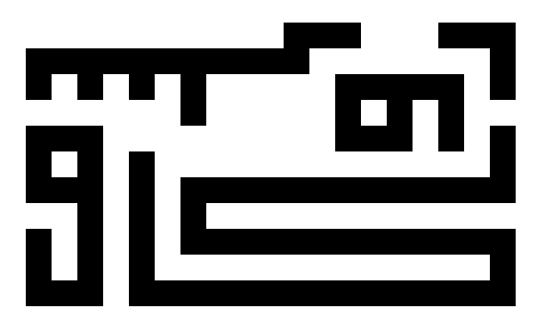
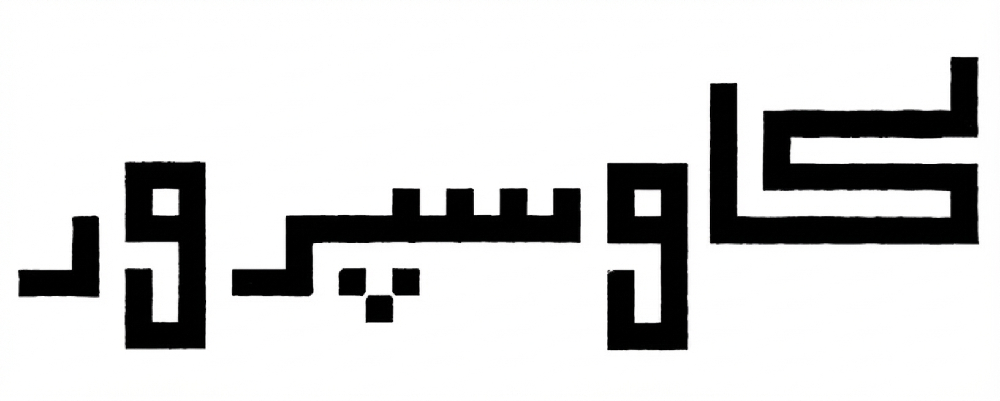
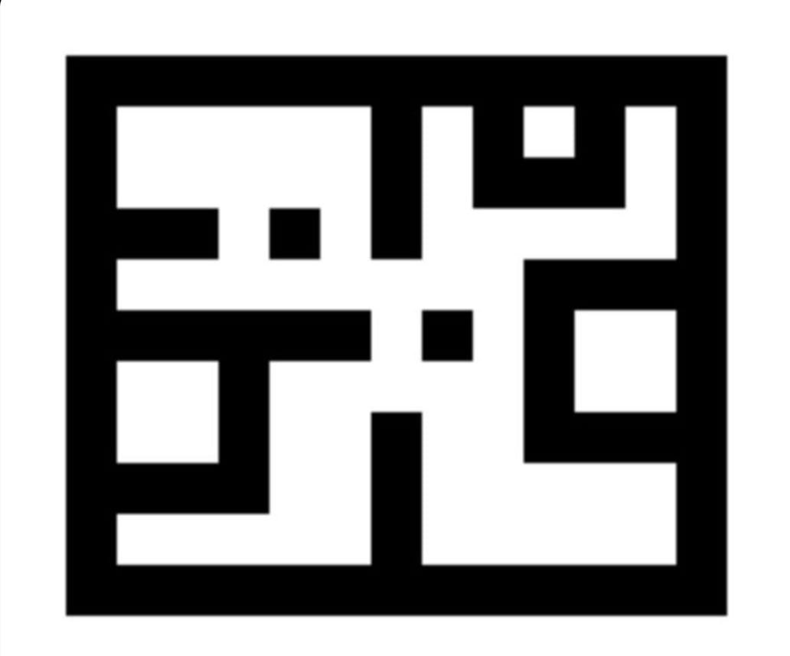
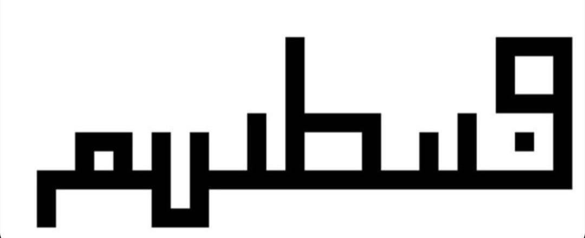

calligraphy
I do not think there is anything less expected than finding a linguist being drawn to patterns.
If you travel across Central Asia, or even look at the pictures of palaces that Seljuks and Central Asian dynasties built, you would see a lot of structures that are geometric to an extreme, where the abstraction hijacks the building.


These surfaces also feel very close to Kilim patterns, which are also geometric and often feature repeated motifs. These motifs, along with same principles, of course appear in many parts around the world. But what is interesting about the Seljuk and Central Asian architecture is that they often incorporate calligraphy into their buildings. The writing was not to be read, but to be seen as part of the design.
These inscriptions below are not for reading, even though they technically have a meaning. They are motifs that are important to me. These inscriptions, very much like the feelings they were response to, exists in multiple formats. A cenin1 version, where it is hard to understand and handle. And a string version where the same structure is drawn as a more continuous thread and ready to be engaged.
kaosperver


fırtınam


Footnotes
In Turkish, cenin means “fetus/embryo.”↩︎